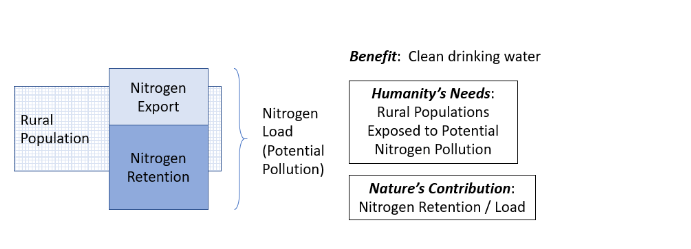

When fertilizers are applied, some of it will percolate and transport to the stream, polluting the water and altering drinking water quality. However, some of it may be retained by healthy soil, this is an NCP (here, specifically: Nitrogen Retention)
This framework for assessing Nature’s Contributions to People (NCP), is based on:
In the case of water quality regulation, the human pressure that creates a potential need for it in a given region or watershed is the total amount of pollutant (i.e. nitrogen load) requiring retention by vegetation in that area. We use rural populations (within 100 km watersheds) as the population exposed because they are presumably less likely to have water treatment options. The need met by nature is nitrogen pollution retention; and we can characterize the biophysical portion of nature’s contribution to potential need as the proportion of total nitrogen pollutant load retained by ecosystems

We examine changes in these individual components of the NCP, from current (2015) conditions to future (2050) scenarios. To imagine cohesive futures, climate scientists have developped the the Shared Socio-economic Pathways (SSPs) (Rosa, 2017). Widely used by the climate research community (IPCC, IPBES...), these narratives for future trajectories in land-use, climate and population change. We considered 3 scenarios:
The Sustainability scenario, (SSP1 paired with RCP 2.6) depicts a "Greener" world shifting gradually toward a more sustainable path, emphasizing more inclusive development (reducing inequalities) and respect of the environment.
The Regional Rivalry scenario (SSP3 paired with RCP 6.0) forecast resurgent nationalism, where countries are concerned about competitiveness and security, there are conflicts. Economic development is slow, education and tech investments declines, inequalities worsen. Climate change is intense and there is strong environmental degradation in some regions.
The Fossil-Fueled Development (SSP5 paired with RCP 8.5) depicts a world where humanity takes the capitalist highway, with high faith in competitive markets, innovation and participatory societies. This world is more and more globalized, with big investments in health, education, and socio-economic development in general. However, this happens with vast exploitation of abundant fossil fuel resources and very consumerist lifestyles, geo-engineering is viewed as the solution.
We first model nitrogen load, export, and retention (the difference between load and export) via the InVEST Nutrient Delivery Ratio model. This model maps nutrient sources from watersheds and their transport to the stream. The model does not represent the details of the nutrient cycle but rather represents the long-term, steady-state flow of nutrients through empirical relationships. Sources of nutrient across the landscape, also called nutrient loads, are determined based on the LULC map and associated loading rates, and delivery factors are computed for each pixel based on the properties of pixels belonging to the same flow path (in particular their slope and retention efficiency of the land use).
We then use these outputs along with data on rural populations (which we assume to have lower access to water treatment) to determine humanity’s needs and nature’s contributions, as the dual components of NCP.
All data displayed is publicly available here
Full methods will be available upon publication, in the Supplementary information of Chaplin-Kramer (in review).